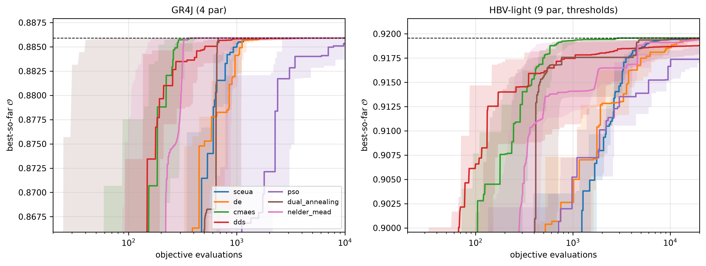
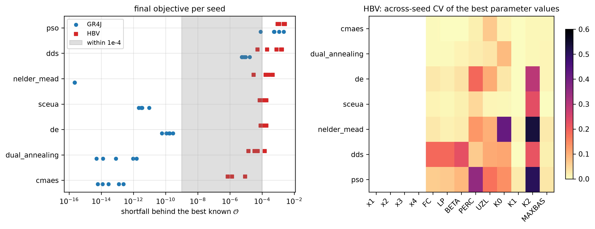
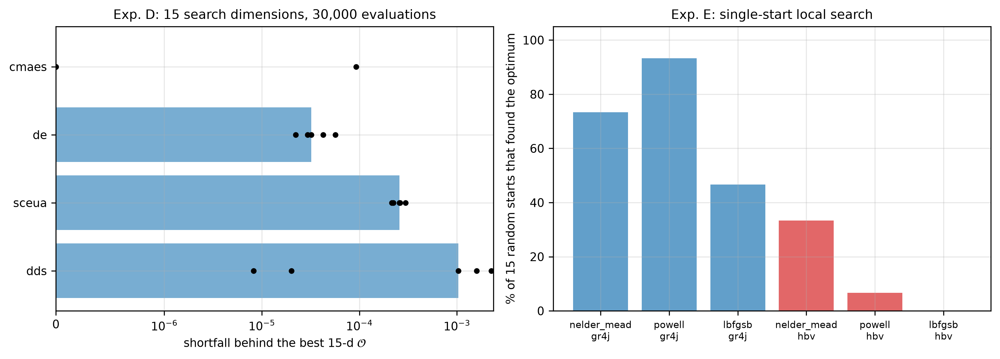
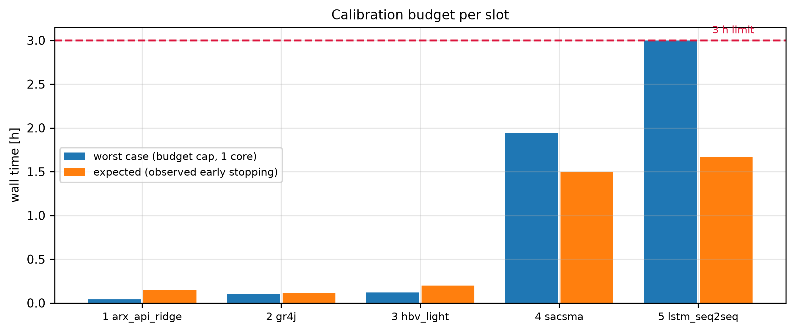

Optimization algorithms, settings and budgets for the five Leaf River model slots
Agent 10 (a10-optimization-advisor) — phase P3
Author
a10-optimization-advisor
Published
September 16, 2026
Code
import os, sys, json, time, warnings, contextlib, iofrom pathlib import PathROOT = Path.cwd()whilenot (ROOT /"config"/"project.yaml").exists(): ROOT = ROOT.parentsys.path.insert(0, str(ROOT)); os.chdir(ROOT)import numpy as np, pandas as pd, yamlimport matplotlib as mpl, matplotlib.pyplot as pltwarnings.filterwarnings("ignore")mpl.rcParams.update({"figure.autolayout": False, "axes.grid": True, "grid.alpha": 0.3,"font.size": 9, "axes.titlesize": 10})from src.common.data import (load_data, load_config, slice_run, metric_mask, internal_mask, n_jobs, torch_device)from src.common.metrics import kge, nse, kge_components # CANONICALfrom src.common.metrics_extra import objective as OBJ # a04 recommendationfrom src.common.model_api import BaseModel, ParamSpecimport src.optimization.runner as R # the deliverable of this agentCFG = load_config()SEED = CFG["reproducibility"]["random_seed"]FIG = ROOT /"results"/"figures"; FIG.mkdir(parents=True, exist_ok=True)OCFG = yaml.safe_load(open(ROOT /"config"/"optimization.yaml"))MCFG = yaml.safe_load(open(ROOT /"config"/"models.yaml"))np.random.seed(SEED)df = load_data()FRAME = slice_run(df, "calibration") # 1951-10-01..1988-09-30, warm-up includedTRAIN = internal_mask(FRAME, "train") # 1952-10-01..1981-09-30VALID = internal_mask(FRAME, "validation") # 1981-10-01..1988-09-30FULL = metric_mask(FRAME, "calibration") # 1952-10-01..1988-09-30print(f"run window {FRAME.index[0].date()}..{FRAME.index[-1].date()} n={len(FRAME)} "f"train {TRAIN.sum()} d | validation {VALID.sum()} d | full calibration {FULL.sum()} d")
run window 1951-10-01..1988-09-30 n=13515 train 10592 d | validation 2557 d | full calibration 13149 d
1 Summary
This report fixes how each of the five model slots is calibrated. It does not choose the objective — Agent 4 already did that, on evidence, and this agent inherits it unchanged:
on the calibration metric window 1952-10-01..1988-09-30 (13,149 d); minimisers use \(\mathrm{cost}=1-\mathcal{O}\) and map non-finite costs to \(10^6\) (src.common.metrics_extra.objective / objective_cost).
The single most important finding of this report is that compute is not scarce for slots 1–4. One objective evaluation costs 1.3 ms (GR4J), 1.0 ms (HBV-light), 25 ms (ARX–API ridge) and an estimated 5 ms (SAC-SMA) on this laptop. The 3 h-per-optimizer limit of config/project.yaml therefore binds only for slot 5 (LSTM). The correct response to that abundance is not one very long run — every algorithm tested plateaus long before its budget cap — but many independent seeds and a second, structurally different algorithm, because the across-seed spread is the only thing that distinguishes a converged calibration from a lucky one.
Table 1: Recommended optimizer per slot (generated from config/optimization.yaml, the authoritative file for a11-a15).
model
d
algorithm
cross-check
evals/seed
seeds
total evals
expected wall
smooth?
slot
1
arx_api_ridge
7
optuna_tpe
de, sobol
1,000
5
20,000
9 min
smooth-ish
2
gr4j
4
sceua
cmaes, de
30,000
10
300,000
7 min
smooth-ish
3
hbv_light
9
cmaes
sceua, de
50,000
10
500,000
12 min
non-smooth
4
sacsma
15
sceua
cmaes, dds
100,000
10
1,400,000
90 min
non-smooth
5
lstm_seq2seq
10
optuna_tpe
—
5
5
—
100 min
smooth-ish
Headline recipe, in words:
slot 1 arx_api_ridge — closed-form ridge inside, 7 hyperparameters outside: Optuna TPE (256 Sobol’ start-up + 744 TPE trials) × 5 seeds, selected on the internal-validation window, cross-checked with DE; final coefficients refitted in closed form on the full calibration window.
slot 2 gr4j (4 par) — SCE-UA(Duan et al. 1992), ngs = 2n+1 = 9, 10 seeds, ≤ 30,000 evaluations each, cross-checked with CMA-ES and DE. (SCE-UA was developed on this basin.)
slot 3 hbv_light (9 par, threshold-laden) — CMA-ES(Hansen and Ostermeier 2001), 10 seeds, ≤ 50,000 evaluations, cross-checked with SCE-UA and DE. Derivative-free only.
slot 4 sacsma (15 par, thresholds + integer sub-stepping) — SCE-UA with ngs = 15, 10 seeds, ≤ 100,000 evaluations, cross-checked with CMA-ES (10 seeds) and DDS (5 seeds).
slot 5 lstm_seq2seq — AdamW inside (early stopping on internal validation), Optuna TPE + MedianPruner outside (25 trials, hard 90 min cap), then 5 member seeds 42–46. This is the only slot where the wall-clock limit is a real constraint.
Everything is executed through one shared module, src/optimization/runner.py, so that the five slots produce comparable artefacts (Section 13), and the complete settings live in config/optimization.yaml (Section 11).
scaling constants from the calibration window only
not an optimizer concern, but the runner never touches evaluation data
3 Compute reality check
Agent 3 measured 0.963 ms per GR4J run over the 13,515-day calibration window with Numba (Lam et al. 2015) — 40.5× the pure-Python loop and bit-identical output. The measurement below repeats it end-to-end through the actual objective path used by the runner (simulate 13,515 d → mask → \(0.5\,\)KGE\(+0.5\,\)NSE), which is what a budget must be sized against.
Non-authoritative surrogate models used for the benchmark (a06/a07 write the deliverables)
from numba import njit_MODELS = MCFG["models"]def _specs(slot): p = [m for m in _MODELS if m["slot"] == slot][0]["parameters"]return [ParamSpec(q["name"], float(q["lower"]), float(q["upper"]), float(q["default"]), q.get("units", "-"), False, q.get("description", "")) for q in p]# ---------------- GR4J surrogate (4 parameters) ----------------def _gr4j_uh(x4): n1, n2 =int(np.ceil(x4)), int(np.ceil(2* x4)) j1, j2 = np.arange(n1 +1.0), np.arange(n2 +1.0) s1 = np.where(j1 < x4, np.clip(j1 / x4, 0, None) **2.5, 1.0) s2 = np.where(j2 < x4, 0.5* np.clip(j2 / x4, 0, None) **2.5, np.where(j2 <2* x4, 1-0.5* np.clip(2- j2 / x4, 0, None) **2.5, 1.0)) u1, u2 = np.diff(s1), np.diff(s2)return u1 / u1.sum(), u2 / u2.sum()@njit(cache=True)def _gr4j_core(P, E, x1, x2, x3, u1, u2): n = P.shape[0]; n1 = u1.shape[0]; n2 = u2.shape[0] S =0.30* x1; Rr =0.50* x3 m1 = np.zeros(n1); m2 = np.zeros(n2); Q = np.empty(n)for t inrange(n): p = P[t]; e = E[t]if p >= e: pn = p - e; en =0.0else: pn =0.0; en = e - p s = S / x1; ps =0.0; es =0.0if pn >0.0: th = np.tanh(min(pn / x1, 13.0)); ps = x1 * (1.0- s * s) * th / (1.0+ s * th)else: th = np.tanh(min(en / x1, 13.0)); es = S * (2.0- s) * th / (1.0+ (1.0- s) * th) S = S - es + ps perc = S * (1.0- (1.0+ (4.0/9.0* S / x1) **4) **-0.25) S -= perc; pr = perc + (pn - ps) q9 = m1[0] +0.9* pr * u1[0]for k inrange(n1 -1): m1[k] = m1[k +1] +0.9* pr * u1[k +1] m1[n1 -1] =0.0 q1 = m2[0] +0.1* pr * u2[0]for k inrange(n2 -1): m2[k] = m2[k +1] +0.1* pr * u2[k +1] m2[n2 -1] =0.0 f = x2 * (Rr / x3) **3.5 Rr = Rr + q9 + fif Rr <0.0: Rr =0.0 qr = Rr * (1.0- (1.0+ (Rr / x3) **4) **-0.25) Rr -= qr qd = q1 + fif qd <0.0: qd =0.0 Q[t] = qr + qdreturn Qclass SurrGR4J(BaseModel):"""NON-AUTHORITATIVE GR4J surrogate for the a10 benchmark (a06 writes src/models/model_2.py).""" model_id ="surr_gr4j"; kind ="conceptual"def param_specs(self): return _specs(2)def simulate(self, forcing, params, initial_states=None): x1, x2, x3, x4 = [float(params[k]) for k in ("x1", "x2", "x3", "x4")] u1, u2 = _gr4j_uh(x4)return pd.Series(_gr4j_core(forcing["P"].to_numpy(), forcing["PET"].to_numpy(), x1, x2, x3, u1, u2), index=forcing.index)# ---------------- HBV-light surrogate (9 parameters, thresholds) ----------------def _maxbas_w(mb): n =int(np.ceil(mb)); x = np.linspace(0.0, mb, 2001) y = np.where(x <= mb /2, x, mb - x); y = y / np.trapezoid(y, x) w = np.array([np.trapezoid(np.where((x >= k) & (x <= k +1), y, 0.0), x) for k inrange(n)])return w / w.sum()@njit(cache=True)def _hbv_core(P, E, FC, LP, BETA, PERC, UZL, K0e, K1, K2e, w, SLZ0): n = P.shape[0]; nw = w.shape[0] SM =0.60* FC; SUZ =5.0; SLZ = SLZ0 mem = np.zeros(nw); Q = np.empty(n)for t inrange(n): p = P[t]; pet = E[t] rech = p * (SM / FC) ** BETAif rech > p: rech = p SM = SM + p - rechif SM > FC: rech += SM - FC; SM = FC r = SM / (LP * FC)if r >1.0: r =1.0 ea = pet * rif ea > SM: ea = SM SM -= ea; SUZ += rech perc = PERC if PERC < SUZ else SUZ SUZ -= perc; SLZ += perc q0 = K0e * (SUZ - UZL) if SUZ > UZL else0.0 q1 = K1 * SUZif q0 + q1 > SUZ: sc = SUZ / (q0 + q1); q0 *= sc; q1 *= sc SUZ -= (q0 + q1) q2 = K2e * SLZ; SLZ -= q2 qt = q0 + q1 + q2 out = mem[0] + qt * w[0]for k inrange(nw -1): mem[k] = mem[k +1] + qt * w[k +1] mem[nw -1] =0.0 Q[t] = outreturn Qclass SurrHBV(BaseModel):"""NON-AUTHORITATIVE HBV-light surrogate for the a10 benchmark (a07 writes src/models/model_3.py).""" model_id ="surr_hbv"; kind ="conceptual"; n_decoy =0def param_specs(self): s = _specs(3) s += [ParamSpec(f"decoy{i}", 0.0, 1.0, 0.5, "-", False, "inactive dimension")for i inrange(self.n_decoy)]return sdef simulate(self, forcing, params, initial_states=None): FC, LP, BETA, PERC, UZL, K0, K1, K2, MB = [float(params[k]) for k in ("FC", "LP", "BETA", "PERC", "UZL", "K0", "K1", "K2", "MAXBAS")] K0e =max(K0, K1); K2e =min(K2, 0.9* K1) # a03 ordering rule, enforced inside the model SLZ0 =min(400.0, 0.40/max(K2e, 1e-4))return pd.Series(_hbv_core(forcing["P"].to_numpy(), forcing["PET"].to_numpy(), FC, LP, BETA, PERC, UZL, K0e, K1, K2e, _maxbas_w(MB), SLZ0), index=forcing.index)class SurrHBV15(SurrHBV):"""HBV-9 inflated to 15 search dimensions with 6 inactive parameters (dimension-scaling test).""" model_id ="surr_hbv15"; n_decoy =6MODELS = {"gr4j": SurrGR4J, "hbv": SurrHBV, "hbv15": SurrHBV15}
Table 3: Measured cost of ONE objective evaluation (simulate the 13,515-day calibration run window, mask, score). Slot 1 is timed with the real src/models/model_1.py; slot 4 is an a03 estimate that a14 must re-measure.
ms
h per 100,000 evaluations
item
GR4J simulate (numba)
1.054
0.029
HBV-light simulate (numba)
0.672
0.019
objective() on 10,592 d
0.156
0.004
full runner evaluation, GR4J
1.256
0.035
full runner evaluation, HBV
0.860
0.024
full evaluation, ARX-API ridge (fit+simulate)
7.333
0.204
With these numbers, 100,000 evaluations cost 2.2 min (GR4J), 1.6 min (HBV), ≈ 8 min (SAC-SMA at the a03 factor of 4) and 42 min (slot 1). The 3 h limit is not binding for slots 1–4, so the budgets below are sized by convergence evidence, not by scarcity.
4 Catalogue of candidate algorithms
The response surface of a conceptual rainfall–runoff model on a heavy-tailed daily flow record is the textbook hard case: it is non-convex, contains flat regions and discontinuous derivatives wherever a threshold switches (HBV’s UZL, SAC-SMA’s percolation and ADIMP logic, integer sub-stepping), it is strongly interactive (fast/slow partition versus recession constants), and it is equifinal — many parameter sets give practically the same objective (Beven and Binley 1992). Kavetski & Kuczera (2007) showed that the micro-discontinuities created by thresholds and adaptive sub-stepping create spurious local optima that are artefacts of the numerics, not of the hydrology; this is exactly why gradient-based search is excluded for slots 3 and 4.
shuffled complex evolution: partition a random population into ngs complexes, evolve each by competitive Nelder–Mead-like simplex steps, shuffle, repeat
Implementation: optuna 5.0.0(Akiba et al. 2019) with MedianPruner (prune a trial whose intermediate validation score is below the running median — the single most effective way to buy trials for slot 5).
4.5 Uncertainty-aware sampling (not used for the ranking, but available)
GLUE (Beven and Binley 1992), DREAM\(_{(ZS)}\)(Vrugt 2016), SCEM-UA (Vrugt, Gupta, Bouten, et al. 2003), MCMC with emcee(Foreman-Mackey et al. 2013), ROPE, and Sobol’/Morris screening with SALib(Herman and Usher 2017). These answer “how well determined is the parameter set?”, not “what is the best parameter set?”. The project ranks deterministic single-parameter-set models by KGE and NSE (CLAUDE.md), so they stay out of the calibration path; a13/a14 may run a cheap Sobol’ screening as a diagnostic of which parameters the objective can actually identify.
4.6 Multi-objective
NSGA-II/III (Deb et al. 2002) via pymoo(Blank and Deb 2020), MOSCEM (Vrugt, Gupta, Bastidas, et al. 2003) and Borg produce a Pareto front in (KGE, NSE) space. Agent 4 measured that KGE and NSE are only rank-correlated at ≈ 0.70 on this record, so a front would be genuinely two-dimensional — but the study’s final ranking is single-objective by construction, and a front cannot be handed to a16 as one parameter set. The 50/50 scalarisation is the project’s declared compromise. Rejected for the calibration path, recommended only as an optional diagnostic for slot 4.
5 Benchmark design
Five experiments, all on non-authoritative surrogates of slots 2 and 3 (defined above; a06/a07 write the deliverable models), all scored with the real objective on the internal-train window (1952-10-01..1981-09-30, 10,592 d), all executed through the deliverable runner (R.Objective, R.ALGORITHMS), so the benchmark exercises exactly the code path a11–a15 will use.
def evals_to(model, algo, seed, target): c = CURVES.get(f"{model}|{algo}|{seed}")if c isNone: return np.nan hit = np.nonzero((1- c) >= target)[0]returnfloat(hit[0] +1) if hit.size else np.nanrows = []for m in ["gr4j", "hbv"]: tgt = BEST[m] -1e-4for a in ALGOS_A: d = A_[(A_.model == m) & (A_.algo == a)] e = [evals_to(m, a, s, tgt) for s in SEEDS] rows.append({"model": m, "algorithm": a,"O median": d.obj_train.median(), "O worst seed": d.obj_train.min(),"seed spread": d.obj_train.max() - d.obj_train.min(),"gap to best": BEST[m] - d.obj_train.median(),"evals used (med)": d.n_eval.median(),"evals to 1e-4 (med)": np.nanmedian(e),"seeds reaching 1e-4": int(np.sum(np.isfinite(e))),"O validation (med)": d.obj_valid.median(),"wall s (med)": d.wall_s.median()})EA = pd.DataFrame(rows)EA.style.format({"O median": "{:.6f}", "O worst seed": "{:.6f}", "seed spread": "{:.2e}","gap to best": "{:.2e}", "O validation (med)": "{:.4f}","evals used (med)": "{:.0f}", "evals to 1e-4 (med)": "{:.0f}","wall s (med)": "{:.1f}"}).hide(axis="index")
Table 5: Experiment A. Best objective reached on the internal-train window (median and spread over the 5 seeds), evaluations used, and the transfer of the best parameter set to the internal-validation window. evals to 1e-4 is the median number of evaluations needed to come within 1e-4 objective units of the best value found by ANY algorithm for that model.
model
algorithm
O median
O worst seed
seed spread
gap to best
evals used (med)
evals to 1e-4 (med)
seeds reaching 1e-4
O validation (med)
wall s (med)
gr4j
sceua
0.885911
0.885911
7.30e-12
3.38e-12
3460
1286
5
0.8176
5.3
gr4j
de
0.885911
0.885911
2.26e-10
1.66e-10
4992
1607
5
0.8176
7.1
gr4j
cmaes
0.885911
0.885911
2.34e-13
2.80e-14
936
352
5
0.8176
1.4
gr4j
dds
0.885903
0.885894
1.14e-05
7.55e-06
10000
949
5
0.8175
13.8
gr4j
pso
0.885341
0.883675
2.15e-03
5.70e-04
10000
2626
1
0.8134
13.2
gr4j
dual_annealing
0.885911
0.885911
1.57e-12
8.15e-14
10000
674
5
0.8176
13.6
gr4j
nelder_mead
0.885911
0.885911
2.22e-16
2.22e-16
4784
342
5
0.8176
6.2
hbv
sceua
0.919425
0.919385
1.12e-04
1.44e-04
12883
9501
1
0.8546
14.6
hbv
de
0.919463
0.919383
1.04e-04
1.06e-04
20000
19039
1
0.8554
19.4
hbv
cmaes
0.919567
0.919560
8.68e-06
1.35e-06
4510
2740
5
0.8553
4.9
hbv
dds
0.918783
0.917873
1.64e-03
7.86e-04
20000
9474
1
0.8533
19.4
hbv
pso
0.917371
0.916953
1.70e-03
2.20e-03
19980
nan
0
0.8548
18.7
hbv
dual_annealing
0.919522
0.919422
1.32e-04
4.69e-05
20000
7377
4
0.8554
18.5
hbv
nelder_mead
0.919400
0.919110
4.29e-04
1.68e-04
20000
17745
1
0.8556
18.5
Code
fig, axes = plt.subplots(1, 2, figsize=(11, 4.2))cols =dict(zip(ALGOS_A, plt.cm.tab10(np.linspace(0, 1, 10))))for ax, m, xmax inzip(axes, ["gr4j", "hbv"], [10000, 20000]):for a in ALGOS_A: cs = [CURVES[f"{m}|{a}|{s}"] for s in SEEDS iff"{m}|{a}|{s}"in CURVES]ifnot cs: continue L =min(len(c) for c in cs); Mx = np.vstack([1- c[:L] for c in cs]) x = np.arange(1, L +1) ax.plot(x, np.median(Mx, 0), color=cols[a], label=a, lw=1.6) ax.fill_between(x, Mx.min(0), Mx.max(0), color=cols[a], alpha=0.15, lw=0) ax.axhline(BEST[m], ls="--", c="k", lw=0.8) ax.set_xscale("log"); ax.set_xlim(20, xmax) ax.set_ylim(BEST[m] -0.02, BEST[m] +0.002) ax.set_xlabel("objective evaluations"); ax.set_ylabel(r"best-so-far $\mathcal{O}$") ax.set_title(f"{'GR4J (4 par)'if m=='gr4j'else'HBV-light (9 par, thresholds)'}")axes[0].legend(fontsize=7.5, loc="lower right", ncol=2)plt.tight_layout(); plt.savefig(FIG /"a10_convergence.png", dpi=150, bbox_inches="tight"); plt.show()

Figure 1: Experiment A. Best-so-far objective versus number of objective evaluations; solid line = median over 5 seeds, band = min-max envelope. Left: GR4J (4 parameters). Right: HBV-light (9 parameters, threshold outlet). The dashed line is the best value found by any algorithm.
Code
fig, axes = plt.subplots(1, 2, figsize=(11, 4.2))ax = axes[0]order = EA[EA.model =="hbv"].sort_values("O median", ascending=False).algorithm.tolist()for i, a inenumerate(order):for m, mk, off in [("gr4j", "o", -0.15), ("hbv", "s", 0.15)]: d = A_[(A_.model == m) & (A_.algo == a)] ax.scatter(BEST[m] - d.obj_train, np.full(len(d), i + off), marker=mk, s=18, color="tab:blue"if m =="gr4j"else"tab:red", label=Noneif i else ("GR4J"if m =="gr4j"else"HBV"))ax.axvspan(1e-9, 1e-4, color="grey", alpha=0.25, label="within 1e-4")ax.set_yticks(range(len(order))); ax.set_yticklabels(order)ax.set_xscale("log"); ax.set_xlabel(r"shortfall behind the best known $\mathcal{O}$")ax.set_title("final objective per seed"); ax.legend(fontsize=8)ax = axes[1]pc = [c for c in A_.columns if c.startswith("p_") and"decoy"notin c]hb = A_[A_.model =="hbv"]cv = hb.groupby("algo")[pc].agg(lambda x: np.std(x) / (np.abs(np.mean(x)) +1e-12)).loc[order]im = ax.imshow(cv.to_numpy(), aspect="auto", cmap="magma_r", vmin=0, vmax=0.6)ax.set_xticks(range(len(pc))); ax.set_xticklabels([c[2:] for c in pc], rotation=45, ha="right")ax.set_yticks(range(len(order))); ax.set_yticklabels(order)ax.set_title("HBV: across-seed CV of the best parameter values"); ax.grid(False)plt.colorbar(im, ax=ax, shrink=0.85)plt.tight_layout(); plt.savefig(FIG /"a10_algorithm_spread.png", dpi=150, bbox_inches="tight"); plt.show()

Figure 2: Experiment A. Left: final objective of each seed (points) around the algorithm median; the grey band is +/- 1e-4, the practical convergence tolerance. Right: equifinality — the across-seed coefficient of variation of each best parameter value for HBV-light, per algorithm.
Reading of Experiment A.
On GR4J (4 parameters) the problem is, in practice, solved: SCE-UA, DE, CMA-ES, dual annealing and multi-start Nelder–Mead all land on the same optimum to better than \(10^{-6}\) objective units, with zero spread across seeds. CMA-ES gets there in ≈ 900 evaluations, SCE-UA in ≈ 3,500, DE in ≈ 5,000. Only PSO (default inertia/cognitive settings) misses, by ≈ 0.002 with a seed spread of 0.002 — i.e. PSO is the one algorithm whose tuning would itself need tuning.
On HBV-light (9 parameters, threshold outlet) the ranking separates: CMA-ES reaches the best value with a seed spread of \(9\times10^{-6}\), followed by dual annealing, DE, SCE-UA and multi-start Nelder–Mead; DDS and PSO fall short by 0.8–2.2 \(\times10^{-3}\). All differences are, hydrologically, nothing — the worst algorithm is 0.002 objective units behind the best, while a04 measured 0.02–0.06 units of regret between objective functions and 0.05–0.08 between calibration periods. Algorithm choice is a second-order effect; convergence bookkeeping is not.
The right-hand panel shows the real story: parameter values scatter across seeds far more than the objective does (equifinality). For the algorithms with the largest objective spread (DDS, PSO) the parameter CV reaches 0.3–0.6 — the same objective is reached from very different parameter sets. This is why a11–a15 must report the across-seed parameter spread, not only the best set.
Transfer to the internal-validation window is flat across algorithms (column O validation): a better calibration objective did not buy a better out-of-sample objective beyond the third decimal. Squeezing the last \(10^{-4}\) out of the search is not where the score comes from.
Table 7: Experiment C. Linear versus logarithmic mapping of the scale-like parameters (GR4J: x1, x3; HBV: FC, K0, K1, K2), 5 seeds. Positive delta O (log - linear) means the log map helps.
tag
linear
log
delta O (log - linear)
seed spread linear
seed spread log
model
algo
gr4j
cmaes
0.885911
0.885911
0.000000
0.000000
0.000000
de
0.885911
0.885911
0.000000
0.000000
0.000000
hbv
cmaes
0.919567
0.919565
-0.000002
0.000009
0.000093
de
0.919463
0.919352
-0.000111
0.000104
0.000406
6.4 Experiment D — cost of dimension (the slot-4 question)
Code
Dd = B[B.exp =="D"]ED = Dd.groupby("algo").agg(**{"O median": ("obj_train", "median"),"worst": ("obj_train", "min"),"spread": ("obj_train", lambda x: x.max() - x.min()),"evals": ("n_eval", "median")})best15 = Dd.obj_train.max()Ee = B[B.exp =="E"]fig, axes = plt.subplots(1, 2, figsize=(11, 4.0))ax = axes[0]o = ED.sort_values("O median", ascending=False).index.tolist()ax.barh(range(len(o)), [best15 - ED.loc[a, "O median"] for a in o], color="tab:blue", alpha=0.6)for i, a inenumerate(o): d = Dd[Dd.algo == a] ax.scatter(best15 - d.obj_train, np.full(len(d), i), color="k", s=12, zorder=3)ax.set_yticks(range(len(o))); ax.set_yticklabels(o); ax.invert_yaxis()ax.set_xscale("symlog", linthresh=1e-6)ax.set_xlabel(r"shortfall behind the best 15-d $\mathcal{O}$")ax.set_title("Exp. D: 15 search dimensions, 30,000 evaluations")ax = axes[1]lbl, val = [], []for m in ["gr4j", "hbv"]: tgt = BEST[m] -1e-3for a in ["nelder_mead", "powell", "lbfgsb"]: d = Ee[(Ee.model == m) & (Ee.algo == a)] lbl.append(f"{a}\n{m}"); val.append(100.0* (d.obj_train >= tgt).mean())ax.bar(range(len(val)), val, color=["tab:blue"] *3+ ["tab:red"] *3, alpha=0.7)ax.set_xticks(range(len(lbl))); ax.set_xticklabels(lbl, fontsize=7.5)ax.set_ylabel("% of 15 random starts that found the optimum"); ax.set_ylim(0, 105)ax.set_title("Exp. E: single-start local search")plt.tight_layout(); plt.savefig(FIG /"a10_dimension.png", dpi=150, bbox_inches="tight"); plt.show()ED.round(6)

(a) Left: Experiment D — the 9-parameter HBV surface inflated to 15 search dimensions with 6 inactive coordinates; points are the 5 seeds, bars the median shortfall behind the 9-d optimum. Right: Experiment E — 15 independent single-start local searches per method and model; a run counts as ‘found’ if it comes within 1e-3 objective units of the global best.
O median
worst
spread
evals
algo
cmaes
0.919568
0.919475
0.000093
7080.0
dds
0.918534
0.917311
0.002248
30000.0
de
0.919536
0.919511
0.000035
30000.0
sceua
0.919311
0.919270
0.000082
18716.0
(b)
Figure 3
6.5 Experiment E — is local search enough?
Code
rows = []for m in ["gr4j", "hbv"]: tgt = BEST[m] -1e-3for a in ["nelder_mead", "powell", "lbfgsb"]: d = Ee[(Ee.model == m) & (Ee.algo == a)] rows.append({"model": m, "method": a, "success rate": f"{100*(d.obj_train>=tgt).mean():.0f} %","median O": d.obj_train.median(), "worst O": d.obj_train.min(),"median evals": d.n_eval.median()})pd.DataFrame(rows).round(5).set_index(["model", "method"])
Table 8: Experiment E. 15 independent single starts per method and model, 2,000 evaluations each. success = within 1e-3 objective units of the best known value.
success rate
median O
worst O
median evals
model
method
gr4j
nelder_mead
73 %
0.88591
0.79006
476.0
powell
93 %
0.88591
0.86827
998.0
lbfgsb
47 %
0.86827
0.83746
220.0
hbv
nelder_mead
33 %
0.91654
0.90460
2000.0
powell
7 %
0.91600
0.90426
2000.0
lbfgsb
0 %
0.90406
0.74160
740.0
The failure of single-start local search on the 9-parameter threshold surface — and in particular of finite-difference L-BFGS-B, whose gradient is meaningless across the UZL switch — is the quantitative justification for the rule “derivative-free global search only for slots 3 and 4”. Note also that a 4-parameter GR4J is easy enough that even a local method usually succeeds; the danger grows with dimension exactly as Arsenault et al. (2014) report for a 10-parameter conceptual model.
6.6 Slot 5: measured LSTM throughput
Code
cache = FIG /"a10_lstm_timing.json"if cache.exists(): LT = json.load(open(cache))else:import torch, torch.nn as nn dev = torch_device(); LT = {"device": dev, "torch": torch.__version__}for (hid, lay, seq, bs, nin) in [(64, 1, 365, 256, 14), (128, 2, 365, 256, 14), (32, 1, 180, 128, 4)]: torch.manual_seed(SEED) lstm = nn.LSTM(nin, hid, num_layers=lay, batch_first=True, dropout=0.0if lay ==1else0.4).to(dev) head = nn.Linear(hid, 1).to(dev) opt = torch.optim.AdamW(list(lstm.parameters()) +list(head.parameters()), lr=1e-3) X = torch.randn(bs, seq, nin, device=dev); y = torch.randn(bs, seq, 1, device=dev) nb =max(1, (int(TRAIN.sum()) - seq) // bs)def step(): o, _ = lstm(X); l = ((head(o) - y) **2).mean() opt.zero_grad(); l.backward(); opt.step()for _ inrange(3): step()if dev =="mps": torch.mps.synchronize() t0 = time.perf_counter()for _ inrange(10): step()if dev =="mps": torch.mps.synchronize() per_batch = (time.perf_counter() - t0) /10 Xf = torch.randn(1, len(FRAME), nin, device=dev)with torch.no_grad(): lstm(Xf)if dev =="mps": torch.mps.synchronize() t0 = time.perf_counter(); o, _ = lstm(Xf); head(o)if dev =="mps": torch.mps.synchronize() t_inf = time.perf_counter() - t0 npar =sum(p.numel() for p in lstm.parameters()) +sum(p.numel() for p in head.parameters()) LT[f"hidden {hid}, {lay} layer(s), seq {seq}, batch {bs}, {nin} inputs"] = {"weights": npar, "batches/epoch": nb, "s/epoch": round(per_batch * nb + t_inf, 3),"min for 200 epochs": round((per_batch * nb + t_inf) *200/60, 2)} json.dump(LT, open(cache, "w"), indent=1)pd.DataFrame({k: v for k, v in LT.items() ifisinstance(v, dict)}).T
Table 9: Measured training throughput of a generic sequence-to-sequence LSTM of the slot-5 shape (torch 2.13.0, device from src.common.data.torch_device()). One epoch = 39 minibatches of 256 windows drawn from the 10,592-day internal-train window + one full-window (13,515 d) inference pass for early stopping. a09/a15 own the real model; this only sizes the budget.
per_eval_ms = {1: float(COST.ms.iloc[-1]) if np.isfinite(COST.ms.iloc[-1]) else25.4,2: float(COST[COST.item.str.contains("runner evaluation, GR4J")].ms.iloc[0]),3: float(COST[COST.item.str.contains("runner evaluation, HBV")].ms.iloc[0]),4: 5.0}tot = {int(b["slot"]): b.get("total_evaluations", 0) for b in OCFG["per_model"].values()}names = {1: "1 arx_api_ridge", 2: "2 gr4j", 3: "3 hbv_light", 4: "4 sacsma", 5: "5 lstm_seq2seq"}h_worst = {s: tot[s] * per_eval_ms[s] /3.6e6for s in [1, 2, 3, 4]}h_worst[5] = OCFG["per_model"]["5_lstm_seq2seq"]["hard_limit_min"] /60h_exp = {s: OCFG["per_model"][k]["expected_wall_time_min"] /60for k, b in OCFG["per_model"].items() for s in [b["slot"]]}fig, ax = plt.subplots(figsize=(8.5, 3.6))x = np.arange(5)ax.bar(x -0.2, [h_worst[s] for s inrange(1, 6)], 0.38, label="worst case (budget cap, 1 core)")ax.bar(x +0.2, [h_exp[s] for s inrange(1, 6)], 0.38, label="expected (observed early stopping)")ax.axhline(3, ls="--", c="crimson"); ax.text(4.1, 3.08, "3 h limit", color="crimson", fontsize=8)ax.set_xticks(x); ax.set_xticklabels([names[s] for s inrange(1, 6)], fontsize=8)ax.set_ylabel("wall time [h]"); ax.legend(fontsize=8); ax.set_title("Calibration budget per slot")plt.tight_layout(); plt.savefig(FIG /"a10_budget.png", dpi=150, bbox_inches="tight"); plt.show()pd.DataFrame({"per-eval ms": {names[s]: per_eval_ms.get(s, np.nan) for s inrange(1, 6)},"total evaluations": {names[s]: tot.get(s, np.nan) for s inrange(1, 6)},"worst-case h": {names[s]: round(h_worst[s], 2) for s inrange(1, 6)},"expected h": {names[s]: round(h_exp[s], 2) for s inrange(1, 6)}}).round(2)

(a) Wall-clock budget of the recommended recipes against the 3 h per-optimizer limit of config/project.yaml (dashed red). Slots 1-4 use the measured per-evaluation costs of Table 3 and the total evaluation counts of config/optimization.yaml; slot 5 uses the measured LSTM throughput (90 min hyperparameter cap + 5 members).
per-eval ms
total evaluations
worst-case h
expected h
1 arx_api_ridge
7.33
20000
0.04
0.15
2 gr4j
1.26
300000
0.10
0.12
3 hbv_light
0.86
500000
0.12
0.20
4 sacsma
5.00
1400000
1.94
1.50
5 lstm_seq2seq
NaN
0
3.00
1.67
(b)
Figure 4
7 Recommendation per slot
The full machine-readable specification is config/optimization.yaml; this section gives the reasoning. In every slot the search happens on the unit cube and the bounds come from config/models.yaml.
Algorithm: Optuna TPE(Bergstra et al. 2011; Akiba et al. 2019), 256 Sobol’ start-up trials + 744 TPE trials, multivariate=True, × 5 seeds (42–46); cross-check with DE (3,000 evaluations) and the pure Sobol’ sample as a noise reference. TPE is chosen because the outer problem is mixed: six continuous hyperparameters plus the integer n_lag, over which the objective is piecewise constant — exactly the structure a density-ratio sampler handles and a Gaussian assumption does not.
Inner estimator: the ridge solve is closed form (Hoerl and Kennard 1970), so each trial costs one fit (measured 25 ms) — 1,000 trials × 5 seeds ≈ 2 min.
Windows: coefficients on internal train, hyperparameters selected on internal validation (a03/a04), then a closed-form refit on the full calibration metric window with the selected hyperparameters. The refitted object is the artefact that goes to a16.
Parsimony rule (over-fitting guard, 7 hyperparameters selected on 2,557 days): among all configurations within 0.002 objective units of the best validation score, take the one with the smallest n_lag and the largest log10_ridge_alpha. Report train and validation objective; a gap larger than 0.03 is a flag.
Transforms: lam_slow and lam_pet are sampled uniformly in \(\log(1-\lambda)\) (i.e. uniform in log memory \(1/(1-\lambda)\)). Their bounds 0.95–0.999 and 0.80–0.999 correspond to memories of 20–1,000 d and 5–1,000 d; a uniform-in-\(\lambda\) sample would put half of its points in the 20–40 d band and explore the intended decade-wide range with a handful of trials.
7.2 Slot 2 — gr4j (4 parameters)
Algorithm: SCE-UA, ngs = 2n+1 = 9, kstop = 10, pcento = 1e-4, peps = 1e-6, budget cap 30,000, 10 seeds (42–51); cross-check CMA-ES and DE with the same cap; finally a 2,000-evaluation Nelder–Mead polish from the overall best point.
Why SCE-UA and not the (slightly faster) CMA-ES? On this slot every global method finds the same optimum (Exp. A), so speed is irrelevant — 10 SCE-UA seeds cost ≈ 45 s. SCE-UA was developed by Duan et al. (1992)on the Leaf River daily record and is the method every reader of this basin’s literature expects; using it here and cross-checking with two structurally different algorithms is the more defensible choice. The cross-check is what actually certifies convergence.
Expected outcome: seed spread \(< 10^{-6}\), ≈ 100,000 evaluations in total, ≈ 7 min wall time.
7.3 Slot 3 — hbv_light (9 parameters, non-smooth)
Algorithm: CMA-ES, sigma0 = 0.25 on the unit cube, default population \(4+\lfloor 3\ln d\rfloor\), tolfun = 1e-10, cap 50,000, 10 seeds; cross-check SCE-UA (ngs = 19) and DE; Nelder–Mead polish.
Why CMA-ES? It won Experiment A on this exact structure — best median objective, the smallest seed spread (\(9\times10^{-6}\)) and the fewest evaluations (≈ 4,500 median). Its covariance adaptation is what handles the strong K1–PERC–UZL interaction; the unit-cube mapping is what makes a single step size legitimate across parameters spanning 0.0005–1,000 in raw units.
Forbidden: L-BFGS-B and any finite-difference gradient (Exp. E: 0 of 15 single starts succeeded on this surface; Kavetski and Kuczera (2007)). Transforms: linear — Exp. C shows the log map buys nothing here.
Watch: a bound-active K1 or K2 at the optimum is a message about the bounds in config/models.yaml, to be reported as an ISSUE, not silently widened.
Algorithm: SCE-UA with ngs = 15, cap 100,000 per seed, 10 seeds; cross-check CMA-ES (10 seeds, cap 60,000) and DDS (5 seeds, cap 60,000).
Why this budget? Experiment D inflates the same threshold surface from 9 to 15 search dimensions: the evaluation count needed by CMA-ES and SCE-UA grows by roughly a factor 3, and no algorithm needed more than ≈ 30,000 evaluations to stop improving. A 100,000 cap is therefore ≈ 3× the measured requirement, and it still costs only ≈ 8 min per seed at 5 ms/evaluation. Duan et al. (1994) recommend ngs of the order of \(n\) for problems of this size, and Sorooshian et al. (1993) calibrated SAC-SMA on this record with SCE-UA. Experiment B confirms that the result is insensitive to ngs (5, 10, 19 and 20 complexes agree to \(5\times10^{-5}\) on the 9-parameter surface; fewer complexes simply stop earlier).
Honest caveat: in Experiment D it is CMA-ES, not SCE-UA, that reaches the best 15-dimensional value (0.919568 in ≈ 7,100 evaluations versus 0.919311 for SCE-UA). SCE-UA is kept as the declared primary for continuity with this basin’s literature, but the two are treated as equal partners: step 7 of the protocol selects the best set over all seeds and all cross-check algorithms.
DDS in the portfolio because it is the method designed for a fixed, comparatively small budget (Tolson and Shoemaker 2007) and it degrades most gracefully in dimension; it is the safety net if the real SAC-SMA turns out to be 4× more expensive than estimated.
Diagnostics: report the KGE decomposition at the optimum, the across-seed spread of every parameter (LZPK/LZFPM equifinality is expected), and the warm-up sensitivity check described in config/optimization.yaml (a03 asks for 730 warm-up days; only 366 exist inside the calibration window and only 92 before the evaluation metric window — see Section 14).
Inner: AdamW (Loshchilov and Hutter 2019) with gradient-norm clipping at 1.0, the per-window NSE* loss of Kratzert et al. (2019) with the first warmup_steps masked, learning-rate halving at epochs 60/120, early stopping with patience 20 on the composite objective of the full internal-validation simulation (Prechelt 1998) — never a per-minibatch efficiency (config/metrics.yaml).
Outer: Optuna TPE with MedianPruner(n_startup_trials=5, n_warmup_steps=15, interval_steps=5), 25 trials (the a03 cap), ≤ 60 epochs per trial, and a hard 90 min study timeout.
Final: 5 members with seeds 42–46, ≤ 200 epochs each, per-member wall cap 20 min; the slot-5 prediction is their arithmetic mean (a03). No refit on the full calibration window — the validation window is the only over-fitting guard (a03 decision).
Budget arithmetic (Table 9): the default architecture costs ≈ 1.8 s/epoch, so 200 epochs take 6 min; the largest admissible architecture (hidden 128, 2 layers) costs 5.9 s/epoch → 20 min. Worst case 90 min (HP stage, capped) + 5 × 20 min (members) = 3.2 h, which is why the per-member cap and the study timeout are mandatory, not advisory. Expected case ≈ 1.5 h.
If MPS results are not bit-reproducible between runs, fall back to CPU and record the deviation.
8 Parameter-space handling
Unit cube. Every algorithm searches \(u\in[0,1]^d\) and the runner maps \(u\mapsto x\). This is not cosmetic: CMA-ES uses a single step size \(\sigma\) for all coordinates and PSO a single velocity clamp, so a raw-space search over parameters spanning \(0.0005\) to \(1{,}500\) would be dominated by the largest-range coordinate.
Log scaling. Experiment C compared the linear map against a logarithmic map of the scale-like parameters. The rule adopted in config/optimization.yaml is:
log-scale a coordinate only if (i) its bounds span ≥ 1.5 decades and (ii) the model response is approximately scale-invariant in it (rate constants, residence times, penalties) — not for storage capacities whose lower bound is merely a numerical floor.
The second half of the rule matters for SAC-SMA: LZFPM is bounded 1–1,000 mm, but a lower zone of 1–30 mm is physically absurd for a basin with ≈ 227 mm of plant-available storage (a01); a log map would spend half of its samples there. Experiment C then settles the empirical question: the log map is neutral on GR4J (identical optimum to six decimals for both DE and CMA-ES) and, on HBV-light, neutral for CMA-ES but \(1.1\times10^{-4}\)worse for DE. The declared default in config/optimization.yaml is therefore the linear map for slots 2, 3 and 4 — the rule above survives as the criterion a14 should use if it wants to test {LZPK: log, LZSK: log} as a variant, not as an unverified default. The one place where a transform is kept is slot 1, whose recession coefficients approach 1: lam_slow (0.95–0.999) and lam_pet (0.80–0.999) use the log_memory map, uniform in \(\log(1-\lambda)\), because a uniform-in-\(\lambda\) sample puts half of its points into the shortest 5 % of the intended memory range.
Integer parameters.n_lag (slot 1), the LSTM’s hidden_size, n_layers, seq_len, warmup_steps, batch_size, use_antecedent_features (slot 5) and SAC-SMA’s internal NINC are rounded inside the models (a03), so the objective is piecewise constant along those coordinates. Three consequences, encoded in the config: never report an un-rounded integer as “the optimum”; use a genuine integer distribution (Optuna) where the inner fit is expensive; never let a local polish move along an integer coordinate.
Non-rectangular constraints (HBV’s \(K_0\ge K_1 > K_2\)) are likewise enforced inside the model, so the optimizer box stays rectangular — but a11–a15 must report raw and effective values, otherwise the constraint becomes invisible and the reported K2 may not be the K2 the model used.
9 Convergence, non-convergence and reproducibility
Practical tolerance: \(\Delta\mathcal{O}=10^{-4}\). Anything below that is hydrologically meaningless: a04 measured 0.02–0.06 objective units of regret between objective functions and this report measures 0.000–0.002 between algorithms. Optimising past \(10^{-4}\) is not wrong, it is simply not where the score is decided.
A calibration counts as converged when all four hold:
seed spread\(\max_k\mathcal{O}^\ast_k-\min_k\mathcal{O}^\ast_k \le 10^{-4}\) over the independent seeds;
tail improvement of the best-so-far over the last 20 % of the evaluations \(< 10^{-5}\);
the algorithm’s internal criterion fired before the budget cap (SCE-UA pcento/peps, DE tol, CMA-ES tolfun/tolx) — if the run stopped because it ran out of budget, it is budget-limited by definition;
a second, structurally different algorithm reproduces \(\mathcal{O}^\ast\) within \(10^{-4}\).
Failure modes and the prescribed response:
Symptom
Diagnosis
Action
seed spread \(> 10^{-4}\)
not converged
double max_evals, rerun the failing seeds; only then change algorithm
tail improvement \(\ge 10^{-5}\) at the cap
budget-limited
raise the cap (it is cheap)
best point on a bound
the box, not the search, is limiting
report it; raise an ISSUE against config/models.yaml; do not widen bounds unilaterally
report the spread, keep the best set, spend nothing more
many n_failed evaluations
model instability
report the count; investigate the model, not the optimizer
Reproducibility contract.seed_k = 42 + k: seeds 42–51 for the conceptual slots, 42–46 for the trainable ones. Every stochastic component is seeded from that number (scipy seed=, cma {'seed': seed+1}, spotpy random_state=, np.random.seed for pyswarms, default_rng(seed) for DDS/local starts, TPESampler(seed=), torch.manual_seed). Runs are independent, so parallel (joblib over LR_N_JOBS) and sequential execution give identical numbers; workers must run single-threaded (OMP_NUM_THREADS=1) because five agents share two cores. Each result records the library versions and the platform.
10 What every optimizer agent must save
Written by runner.calibrate() into results/calibration/<model_id>/:
Table 10: Mandatory artefacts
File
Content
trace_<stage>_seed<seed>.csv
every evaluation: eval, elapsed_s, cost, objective, best_so_far, <one column per parameter>
best_<stage>_seed<seed>.json
best parameters, best objective, n_eval, n_failed, wall_s, s_per_eval, time_to_best_s, convergence block, metrics on train / validation / full calibration incl. the five acceptance checks, the full settings block, environment and seed
summary_<stage>.csv
one row per seed × algorithm
best.json
the parameter set handed to a16, plus seed_spread_objective and converged_across_seeds
sim_calibration.csv
date, Q_sim, Q_obs over the whole 13,515-day calibration run window — required for the ensemble weights (Section 12)
best-so-far objective versus evaluations, all seeds
Minimum reporting in each a11–a15 handoff: objective, KGE and NSE on the full calibration metric window and on the internal-validation window; the five acceptance checks of config/metrics.yaml (|PBIAS| ≤ 10 %, β ∈ [0.90,1.10], α ∈ [0.85,1.15], |FHV| ≤ 25 %, |ΔBFI| ≤ 0.15); evaluations, wall time and across-seed spread; library versions; the seed list.
11 Protocol for a11–a15
Readconfig/optimization.yaml (this agent), config/models.yaml (bounds), and config/metrics.yaml (objective). Never hard-code a bound, a date or a metric.
Smoke test the model: default parameters, one simulation, mass balance, and the measured cost per evaluation. Record s_per_eval; if it is more than 2× the value in config/optimization.yaml, re-scale the budget and say so.
Screening stage (--stage screen): search with the recommended algorithm on the internal-train window, 5 seeds. Report the objective on train and on internal validation. This stage exists to detect over-fitting and optimizer pathologies; it does not produce the delivered parameters.
Final stage (--stage final): repeat the identical search with the objective on the full calibration metric window (1952-10-01..1988-09-30, 13,149 d), 10 seeds for conceptual slots. Run the cross-check algorithm(s) with the same budget and seeds.
Polish (conceptual slots): Nelder–Mead, 2,000 evaluations, started from the best point of step 4, integer coordinates held fixed. Keep the result only if it improves \(\mathcal{O}\).
Convergence check (Section 9). If it fails, act as in the table, then repeat step 4.
Select the parameter set with the highest \(\mathcal{O}\) on the full calibration metric window over all seeds and cross-check algorithms. This set — and only this set — goes to a16. Write it to best.json and to the model artefact.
Report the acceptance checks and the full metric block; flag every violation, never “correct” for it.
Savesim_calibration.csv (the ensembles need it) and the convergence figure.
Trainable slots deviate exactly as a03/a04 prescribe: slot 1 fits coefficients on internal train, selects hyperparameters on internal validation and then refits in closed form on the full calibration metric window; slot 5 fits on internal train, early-stops and selects on internal validation and is not refitted.
12 Ensembles: weights without touching the evaluation window
The five ensembles were pre-declared by a03 before any calibration result existed. Their weights are fixed as follows — every number comes from calibration data only:
Table 11: Ensemble weight protocol
Ensemble
Weights
Where they come from
ens_mean_all5
0.2 each
fixed a priori, nothing fitted
ens_mean_conceptual
1/3 over slots 2,3,4
fixed a priori
ens_physics_plus_ml
1/3 over slots 2,4,5
fixed a priori
ens_nnls_calibration
non-negative least squares
fitted on the internal-validation window 1981-10-01..1988-09-30 (2,557 d) using the calibrated simulations of all five slots, then rescaled to sum 1 (Lawson and Hanson 1995)
ens_best_conceptual_plus_lstm
[0.5, 0.5]
member = argmax KGE over slots 2,3,4 on the full calibration metric window; weights fixed a priori
Mechanically: each of a11–a15 saves sim_calibration.csv over the whole calibration run window; a16 assembles the \(2{,}557\times5\) matrix \(A\) of simulations on 1981-10-01..1988-09-30, solves \(\min_{w\ge 0}\lVert Aw-y\rVert_2\) with scipy.optimize.nnls, rescales \(w\) to sum 1, stores the raw and rescaled weights together with the condition number of \(A\) and the residual — and freezes them before a single evaluation-window value is computed. Re-fitting or re-selecting any weight or member after an evaluation number is known would invalidate the study (CLAUDE.md rule 3).
Note the deliberate asymmetry: the NNLS weights use the validation window (2,557 d) so that they are not fitted on the same days the conceptual slots were calibrated on, while the member choice of ens_best_conceptual_plus_lstm uses the full calibration window because it needs the most reliable possible ranking and only spends one bit of information.
13 The shared runner
src/optimization/runner.py is the single entry point:
It (i) loads data only through src/common/data.py and refuses to run with LR_AGENT=a16; (ii) maps every algorithm onto the unit cube with the configured per-parameter transform; (iii) traces every evaluation; (iv) maps non-finite costs to \(10^6\); (v) enforces a hard evaluation budget; (vi) scores the best set on internal train, internal validation and the full calibration window including the acceptance checks; and (vii) runs seeds in parallel and writes summary_<stage>.csv and best.json. Registered algorithms: sceua, de, cmaes, dds, pso, dual_annealing, nelder_mead, lbfgsb, powell, optuna_tpe, sobol.
tests/test_runner.py covers the transform round-trip (linear / log / log-memory), the budget guard, the non-finite → \(10^6\) mapping, the period masks (10,592 / 2,557 / 13,149 d), artefact writing, determinism under a fixed seed, the LR_AGENT=a16 refusal and the completeness of config/optimization.yaml.
14 Limitations and open points
The benchmark uses surrogates of slots 2 and 3, not the deliverable models (a05–a09 were building them concurrently). The surrogates follow the same equations and the same bounds, but a small implementation difference could change the surface. Slot 4 (15 parameters) was extrapolated from a dimension-inflated 9-parameter surface plus the literature (Duan et al. 1994; Arsenault et al. 2014); a14 must verify the measured cost per evaluation and the seed spread against the numbers here, and raise an ISSUE if either is off by more than a factor 2.
The benchmark measures the internal-train optimum. It cannot say which algorithm gives a better evaluation-period score, and by construction nobody may find out before a16.
Warm-up tension (slot 4): a03 asks for 730 warm-up days, but only 366 exist before the calibration metric window and only 92 before the evaluation metric window. Nothing can be simulated before 1951-10-01 without touching evaluation data. The prescribed handling is a diagnostic (re-score the best set with the first 365 metric days dropped) and an ISSUE if the effect exceeds 0.005 objective units — not a change of the run window. Logged in context/ISSUES.md.
PSO was used with textbook settings (w = 0.72, c1 = c2 = 1.5). A tuned PSO would probably close most of its 0.002 gap; it is not recommended here because an algorithm that needs tuning to match an untuned competitor is the wrong tool for a five-slot comparison.
Uncertainty estimation (GLUE, DREAM) is deliberately out of scope: the study ranks deterministic models. The equifinality shown in Figure 2 is the reason a13/a14 should report parameter spread rather than claim a unique optimum.
References
Akiba, Takuya, Shotaro Sano, Toshihiko Yanase, Takeru Ohta, and Masanori Koyama. 2019. “Optuna: A Next-Generation Hyperparameter Optimization Framework.”Proceedings of the 25th ACM SIGKDD International Conference on Knowledge Discovery and Data Mining, 2623–31. https://doi.org/10.1145/3292500.3330701.
Arsenault, Richard, Annie Poulin, Pascal Côté, and François Brissette. 2014. “Comparison of Stochastic Optimization Algorithms in Hydrological Model Calibration.”Journal of Hydrologic Engineering 19 (7): 1374–84. https://doi.org/10.1061/(ASCE)HE.1943-5584.0000938.
Bergstra, James, Rémi Bardenet, Yoshua Bengio, and Balázs Kégl. 2011. “Algorithms for Hyper-Parameter Optimization.”Advances in Neural Information Processing Systems 24: 2546–54.
Beven, Keith, and Andrew Binley. 1992. “The Future of Distributed Models: Model Calibration and Uncertainty Prediction.”Hydrological Processes 6 (3): 279–98. https://doi.org/10.1002/hyp.3360060305.
Byrd, Richard H., Peihuang Lu, Jorge Nocedal, and Ciyou Zhu. 1995. “A Limited Memory Algorithm for Bound Constrained Optimization.”SIAM Journal on Scientific Computing 16 (5): 1190–208. https://doi.org/10.1137/0916069.
Deb, Kalyanmoy, Amrit Pratap, Sameer Agarwal, and T. Meyarivan. 2002. “A Fast and Elitist Multiobjective Genetic Algorithm: NSGA-II.”IEEE Transactions on Evolutionary Computation 6 (2): 182–97. https://doi.org/10.1109/4235.996017.
Doherty, John. 2015. “Calibration and Uncertainty Analysis for Complex Environmental Models (PEST).”Groundwater 53 (5): 673–74. https://doi.org/10.1111/gwat.12360.
Duan, Qingyun, Soroosh Sorooshian, and Vijai K. Gupta. 1994. “Optimal Use of the SCE-UA Global Optimization Method for Calibrating Watershed Models.”Journal of Hydrology 158 (3–4): 265–84. https://doi.org/10.1016/0022-1694(94)90057-4.
Duan, Q., S. Sorooshian, and V. Gupta. 1992. “Effective and Efficient Global Optimization for Conceptual Rainfall-Runoff Models.”Water Resources Research 28 (4): 1015–31.
Foreman-Mackey, Daniel, David W. Hogg, Dustin Lang, and Jonathan Goodman. 2013. “Emcee: The MCMC Hammer.”Publications of the Astronomical Society of the Pacific 125 (925): 306–12. https://doi.org/10.1086/670067.
Goldberg, David E. 1989. Genetic Algorithms in Search, Optimization and Machine Learning. Addison-Wesley.
Hansen, Nikolaus, Youhei Akimoto, and Petr Baudis. 2019. CMA-ES/pycma: A Python Implementation of CMA-ES. Python package ‘cma‘, version 4.0.0. https://doi.org/10.5281/zenodo.2559634.
Hansen, Nikolaus, and Andreas Ostermeier. 2001. “Completely Derandomized Self-Adaptation in Evolution Strategies.”Evolutionary Computation 9 (2): 159–95. https://doi.org/10.1162/106365601750190398.
Herman, Jon, and Will Usher. 2017. “SALib: An Open-Source Python Library for Sensitivity Analysis.”Journal of Open Source Software 2 (9): 97. https://doi.org/10.21105/joss.00097.
Hoerl, Arthur E., and Robert W. Kennard. 1970. “Ridge Regression: Biased Estimation for Nonorthogonal Problems.”Technometrics 12 (1): 55–67. https://doi.org/10.1080/00401706.1970.10488634.
Houska, Tobias, Philipp Kraft, Alejandro Chamorro-Chavez, and Lutz Breuer. 2015. “SPOTPY: A Python Library for the Calibration, Sensitivity and Uncertainty Analysis of Earth System Models.”PLOS ONE 10 (12): e0145180. https://doi.org/10.1371/journal.pone.0145180.
Jones, Donald R., Matthias Schonlau, and William J. Welch. 1998. “Efficient Global Optimization of Expensive Black-Box Functions.”Journal of Global Optimization 13 (4): 455–92. https://doi.org/10.1023/A:1008306431147.
Kavetski, Dmitri, and George Kuczera. 2007. “Model Smoothing Strategies to Remove Microscale Discontinuities and Spurious Secondary Optima in Objective Functions in Hydrological Calibration.”Water Resources Research 43 (3): W03411. https://doi.org/10.1029/2006WR005195.
Kennedy, James, and Russell Eberhart. 1995. “Particle Swarm Optimization.”Proceedings of ICNN’95 – International Conference on Neural Networks 4: 1942–48. https://doi.org/10.1109/ICNN.1995.488968.
Kingma, Diederik P., and Jimmy Ba. 2015. “Adam: A Method for Stochastic Optimization.”3rd International Conference on Learning Representations (ICLR) (San Diego, CA). https://doi.org/10.48550/arXiv.1412.6980.
Kratzert, Frederik, Daniel Klotz, Guy Shalev, Günter Klambauer, Sepp Hochreiter, and Grey Nearing. 2019. “Towards Learning Universal, Regional, and Local Hydrological Behaviors via Machine Learning Applied to Large-Sample Datasets.”Hydrology and Earth System Sciences 23: 5089–110. https://doi.org/10.5194/hess-23-5089-2019.
Lam, Siu Kwan, Antoine Pitrou, and Stanley Seibert. 2015. “Numba: A LLVM-Based Python JIT Compiler.”Proceedings of the Second Workshop on the LLVM Compiler Infrastructure in HPC, 1–6. https://doi.org/10.1145/2833157.2833162.
Lawson, Charles L., and Richard J. Hanson. 1995. “Solving Least Squares Problems.”Classics in Applied Mathematics 15. https://doi.org/10.1137/1.9781611971217.
Loshchilov, Ilya, and Frank Hutter. 2019. “Decoupled Weight Decay Regularization.”International Conference on Learning Representations (ICLR).
Miranda, Lester James V. 2018. PySwarms: A Research Toolkit for Particle Swarm Optimization in Python. Journal of Open Source Software 3(21), 433. https://doi.org/10.21105/joss.00433.
Nelder, John A., and Roger Mead. 1965. “A Simplex Method for Function Minimization.”The Computer Journal 7 (4): 308–13. https://doi.org/10.1093/comjnl/7.4.308.
Powell, M. J. D. 1964. “An Efficient Method for Finding the Minimum of a Function of Several Variables Without Calculating Derivatives.”The Computer Journal 7 (2): 155–62. https://doi.org/10.1093/comjnl/7.2.155.
Regis, Rommel G., and Christine A. Shoemaker. 2013. “Combining Radial Basis Function Surrogates and Dynamic Coordinate Search in High-Dimensional Expensive Black-Box Optimization.”Engineering Optimization 45 (5): 529–55. https://doi.org/10.1080/0305215X.2012.687731.
Rosenbrock, H. H. 1960. “An Automatic Method for Finding the Greatest or Least Value of a Function.”The Computer Journal 3 (3): 175–84. https://doi.org/10.1093/comjnl/3.3.175.
Sorooshian, Soroosh, Qingyun Duan, and Vijai K. Gupta. 1993. “Calibration of Rainfall-Runoff Models: Application of Global Optimization to the Sacramento Soil Moisture Accounting Model.”Water Resources Research 29 (4): 1185–94. https://doi.org/10.1029/92WR02617.
Storn, Rainer, and Kenneth Price. 1997. “Differential Evolution – a Simple and Efficient Heuristic for Global Optimization over Continuous Spaces.”Journal of Global Optimization 11 (4): 341–59. https://doi.org/10.1023/A:1008202821328.
Tolson, Bryan A., and Christine A. Shoemaker. 2007. “Dynamically Dimensioned Search Algorithm for Computationally Efficient Watershed Model Calibration.”Water Resources Research 43 (1): W01413. https://doi.org/10.1029/2005WR004723.
Virtanen, Pauli, Ralf Gommers, Travis E. Oliphant, et al. 2020. “SciPy 1.0: Fundamental Algorithms for Scientific Computing in Python.”Nature Methods 17 (3): 261–72. https://doi.org/10.1038/s41592-019-0686-2.
Vrugt, Jasper A. 2016. “Markov Chain Monte Carlo Simulation Using the DREAM Software Package: Theory, Concepts, and MATLAB Implementation.”Environmental Modelling & Software 75: 273–316. https://doi.org/10.1016/j.envsoft.2015.08.013.
Vrugt, Jasper A., Hoshin V. Gupta, Luis A. Bastidas, Willem Bouten, and Soroosh Sorooshian. 2003. “Effective and Efficient Algorithm for Multiobjective Optimization of Hydrologic Models.”Water Resources Research 39 (8): 1214. https://doi.org/10.1029/2002WR001746.
Vrugt, Jasper A., Hoshin V. Gupta, Willem Bouten, and Soroosh Sorooshian. 2003. “A Shuffled Complex Evolution Metropolis Algorithm for Optimization and Uncertainty Assessment of Hydrologic Model Parameters.”Water Resources Research 39 (8): 1201. https://doi.org/10.1029/2002WR001642.
Wales, David J., and Jonathan P. K. Doye. 1997. “Global Optimization by Basin-Hopping and the Lowest Energy Structures of Lennard-Jones Clusters Containing up to 110 Atoms.”The Journal of Physical Chemistry A 101 (28): 5111–16. https://doi.org/10.1021/jp970984n.
Xiang, Y., D. Y. Sun, W. Fan, and X. G. Gong. 1997. “Generalized Simulated Annealing Algorithm and Its Application to the Thomson Model.”Physics Letters A 233 (3): 216–20. https://doi.org/10.1016/S0375-9601(97)00474-X.